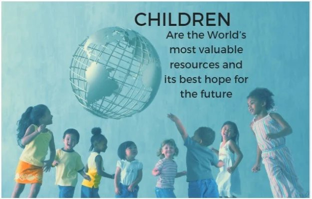
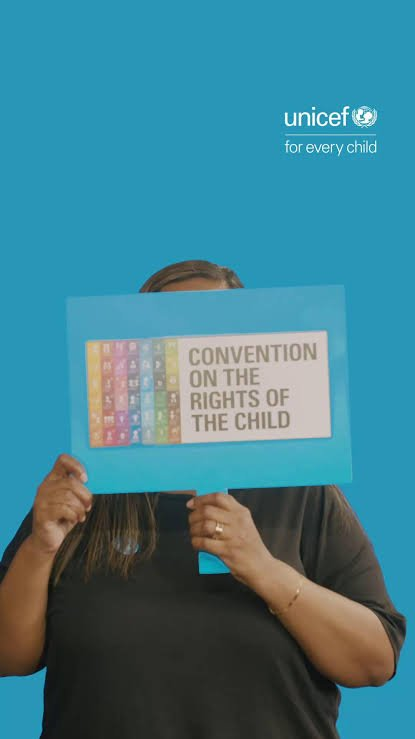
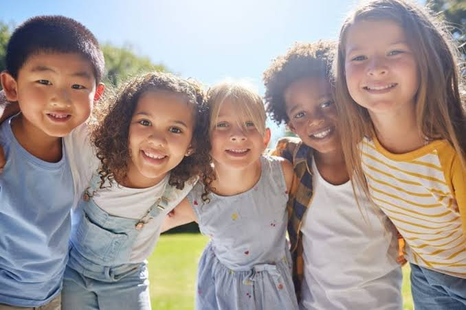
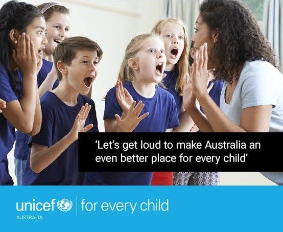
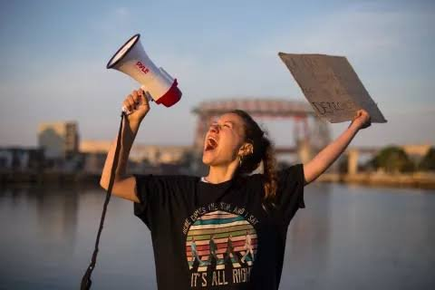
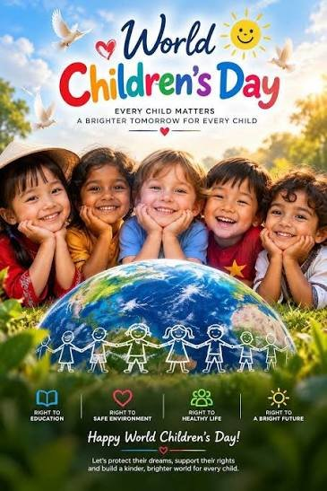

World Children’s Day is UNICEF’s global day of action for children, by children, marking the adoption of the Convention on the Rights of the Child. The Rights of the Child (UNCRC), which defines a child as any person under the age of 18.

Do you know what your rights are? Rights stated by the United Nations are like laws that countries can choose to agree with, respect and ensure people live by these rights in their country. To agree means to make sure that people in their country live with all they need as much as possible, are safe and protected from all sorts of harm and differences are respected and valued. Australia has ratified the Convention on the Rights of the Child, that means that our country agreed that here all people not yet 18 years old, should live the rights that are on the Convention of the Rights of the Child.
If that’s you, you have the right for all you need to keep healthy, have quality education, time to play; rights of protection so you are safe whoever you are and be treated fairly; as a citizen of Australia you have the right to be heard and involved in decisions made about you, freedom to express your own ideas and thoughts, live your truth and participate knowing that all have equal rights and more!

More information about Children’s Rights can be found on our Children’s Rights page.
Progress for children has always been the result of choices. Today, as conflict, discrimination and inequality threaten this progress, the choice to put children first matters more than ever. As in Korczak’s writing and actions, the unknown person in each child is our hope for the future. We need to listen more to our children, respect what they have to say and enable them to actively participate in shaping their futures and the world we will not see.

This World Children’s Day, young people are asked to tell world leaders and leaders in their own countries what they need to live their rights and what kind of future they want – the future that is their right.

“This World Children’s Day, let us listen to children. And let us amplify their voices as they stand up for their rights.
The future is defined by how we care for the next generation.
We must unite to build a safe and equal world #ForEveryChild.” UN Geneva

Let’s protect the rights of every child, every day! Let’s make sure the voices of young people are heard, respected and valued and they are active participants in shaping their future and World Children’s Day becomes a celebration of being young and moving forward for the greater good.

More information about World Children’s Day can be found on our News page and also on our Events page, and what you can do on our Activities page.